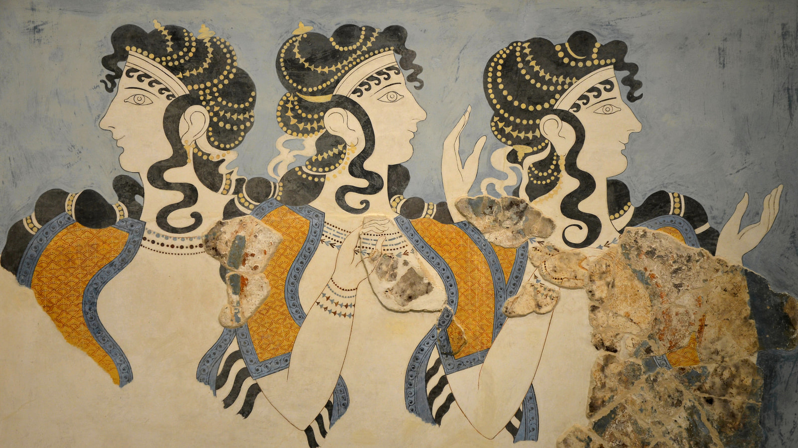

Daily Life
From Farming Food, to Keeping a family and religion
Food & Survival
EXPLORE
Farming & Agriculture
Farming was a central part of life in Bronze Age Greece, providing
communities with much of their food and many important resources.
Farmers grew wheat, barley, lentils, peas, beans, grapes, and
olives. Olive trees were especially valuable because olives could
be
eaten or pressed into oil, while grapes could be eaten fresh or
made
into wine. Farmers used simple tools made from wood, stone, and
bronze and made use of fertile valleys and plains. Because Greece
had dry summers and mountainous terrain, farming required careful
use of the available land and water.
Animal Husbandry
Raising animals was another important part of the Bronze Age
economy. People kept sheep, goats, cattle, pigs, and donkeys, with
each animal providing different resources. Sheep and goats
supplied
meat, milk, wool, and hides, while cattle provided meat and could
also be used for agricultural work. Donkeys were useful for
carrying
goods and transporting materials across the often mountainous
landscape. Animals were also valuable for trade and could be an
important form of wealth for families and communities.
Fishing & Hunting
The sea and countryside provided additional sources of food.
Fishing
was particularly important for communities living near the coast
and
islands, where people caught fish, shellfish, and other marine
animals. Boats and nets allowed fishermen to take advantage of the
surrounding waters. Hunting also supplemented the agricultural
diet,
with people hunting animals such as deer, wild boar, and other
wild
game. Hunting was not only a source of food but could also provide
materials such as hides, bones, and antlers, which were used to
make
clothing, tools, and other objects.
Food & Cooking
Bronze Age Greeks prepared food using the ingredients available
from
farms, animals, and the sea. Grains, legumes, olives, vegetables,
fruits, meat, fish, and dairy products formed an important part of
their diet. Grain could be ground into flour and used to make
different types of bread or porridge. Olive oil was widely used in
food preparation, while honey provided a natural sweetener. Food
was
commonly cooked in clay pots and vessels over open fires or
hearths.
Large storage jars were also used to keep products such as grain,
wine, and olive oil for later use.
Family & Home
EXPLORE
Family & Home Life
The family was an important part of Bronze Age Greek society, and
most people lived in households with close relatives. Homes varied
depending on the period and location, but many were built from
mudbrick, stone, wood, and clay. Houses often had several rooms
used for cooking, sleeping, working, and storage. Wealthier
households, especially in Mycenaean palaces and settlements, could
have larger and more complex buildings. Daily life centered around
the home, where family members prepared food, made clothing, cared
for animals, and carried out other household tasks.
Childhood & Education
Children in Bronze Age Greece learned many of their skills through
family and everyday activities. Rather than attending schools like
those of later Greek societies, children generally learned by
watching and helping adults. Boys and girls could be taught
practical skills such as farming, cooking, weaving, caring for
animals, and making tools or pottery. In Mycenaean society, some
people were trained for specialized roles, and evidence from
Linear B tablets shows that certain occupations and crafts were
organized within palace communities. Children also played with
simple toys, including small figurines, animals, and objects made
from clay.
Personal Care
Personal care was also part of everyday life in Bronze Age Greece.
People washed themselves using water and natural substances, while
oils were used to protect the skin and as part of grooming.
Archaeological discoveries include combs, razors, mirrors,
jewelry, and small containers, showing that appearance and
personal grooming were important. People also cared for their hair
and wore jewelry made from materials such as gold, bronze, stone,
and glass or faience. Clothing was generally made from wool or
linen and could be decorated with different colors and patterns,
particularly among wealthier members of society.
Work & Responsibilities
EXPLORE
Clothing & Weaving
Clothing in Bronze Age Greece was mainly made from wool and linen,
which were produced and processed within households and
specialized workshops. Weaving was an important skill, and women
appear to have played a major role in producing textiles. Wool was
spun into thread and then woven on vertical looms to create
clothing and other fabrics. Textiles could be dyed in different
colors and decorated with patterns. In Mycenaean palace societies,
written records on Linear B tablets also mention workers involved
in textile production, showing that weaving could be an organized
and important economic activity.
Crafts & Skilled Work
Bronze Age Greece had many skilled craftspeople who produced
objects needed for everyday life, trade, and religious activities.
Potters made cooking vessels, storage jars, cups, and decorated
pottery, while metalworkers produced tools, weapons, jewelry, and
other objects from bronze, gold, and other materials. Other crafts
included stone working, carpentry, leatherworking, and ivory
carving. Some highly skilled craftspeople worked in or around
large settlements and palaces, where their products could be
collected, distributed, or traded.
Jobs & Responsibilities
People in Bronze Age Greece had different jobs and
responsibilities depending on their position and community.
Farmers and herders produced food, while fishermen, hunters,
craftsmen, traders, builders, and sailors contributed to the
economy. In Mycenaean palace centers, some workers had specialized
roles and were recorded on Linear B tablets, including people
involved in agriculture, textile production, metalworking, and
food preparation. Palace officials and administrators were
responsible for organizing resources and keeping records, while
rulers and elites controlled important political, economic, and
religious activities. Everyday responsibilities were also shared
within households, with family members contributing through
farming, cooking, weaving, childcare, and other tasks.
Trade & Travel
EXPLORE
Trade & Markets
Trade was an important part of Bronze Age Greek life, particularly
for communities that needed resources that were not available
locally. Greek communities exchanged goods such as pottery, olive
oil, wine, textiles, metal objects, and agricultural products.
They also obtained valuable materials from other regions,
including copper and tin for making bronze, gold, ivory, and
precious stones. Mycenaean pottery and other Greek goods have been
found in places around the Aegean, eastern Mediterranean, and
beyond, showing that these communities were part of extensive
trade networks. Large palace centers also collected, stored, and
distributed goods, helping organize economic activity.
Travel & Sailing
The Aegean Sea was an important route for travel and communication
during the Bronze Age. People traveled by boat between the Greek
mainland, islands, and other parts of the Mediterranean for trade,
fishing, migration, and exploration. Bronze Age ships were mainly
powered by sails and oars, allowing sailors to travel between
coastal settlements and islands. The sea connected communities
that were separated by mountains and difficult terrain on land,
making sailing an essential part of trade and cultural exchange.
However, journeys depended on weather and could be dangerous, so
sailors generally stayed close to coastlines and relied on
familiar routes and landmarks.
Religion
EXPLORE
Religion & Rituals
Religion played an important role in Bronze Age Greek society,
influencing daily life, traditions, and important community
events. People worshipped a variety of gods and goddesses
connected with nature, fertility, agriculture, the sea, and other
aspects of life. Interestingly, Linear B tablets from the
Mycenaean period mention several deities whose names are familiar
from later Greek mythology, including Poseidon, Zeus, Hera, and
Dionysus. Other deities were also worshipped, although their names
and roles are sometimes difficult to identify with certainty.
Religious rituals could include offerings of food, wine, oil,
animals, and other valuable objects to the gods. Ceremonies took
place at shrines, sanctuaries, open-air sacred spaces, and
possibly within palaces and homes. The dead were also treated with
particular care, with different burial practices and grave goods
reflecting beliefs about death and the afterlife. In Bronze Age
Crete, palaces, caves, mountains, and other natural locations
appear to have had religious significance as well. Although we
cannot always know exactly what people believed or how every
ritual was performed, archaeological evidence shows that religion
was closely connected to nature, family, community, and political
life in Bronze Age Greece.
